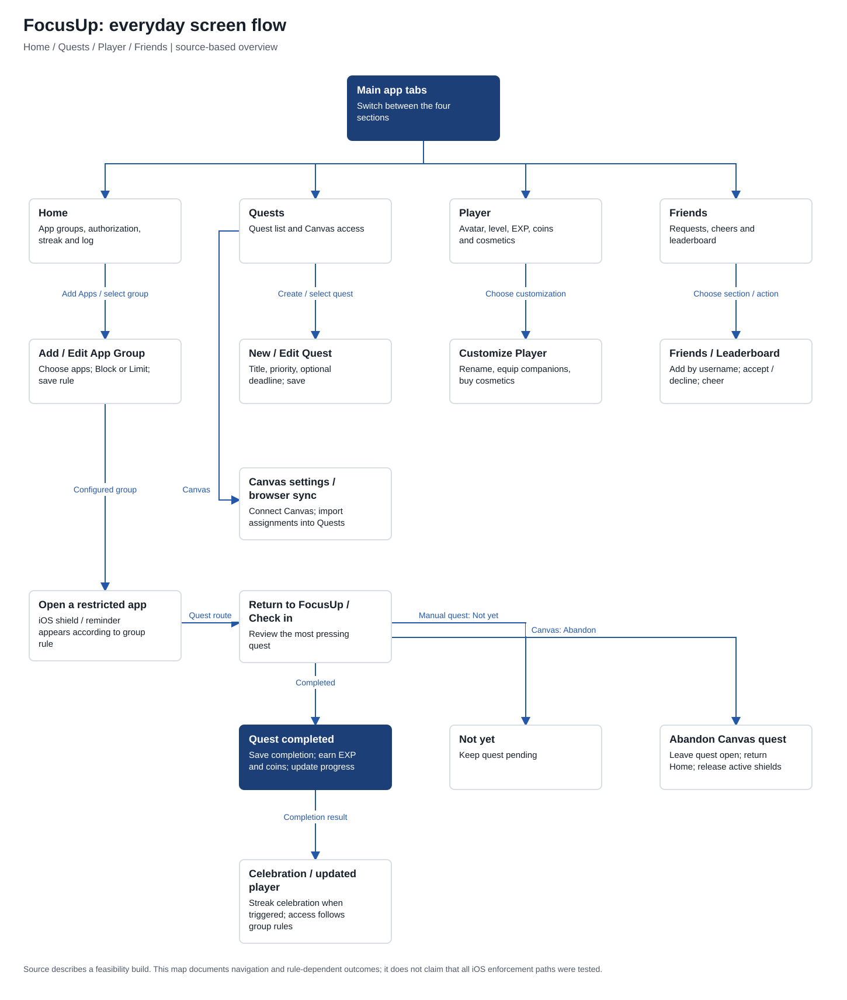
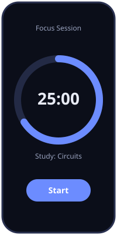
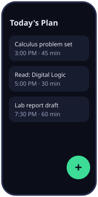
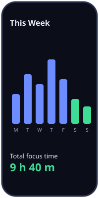
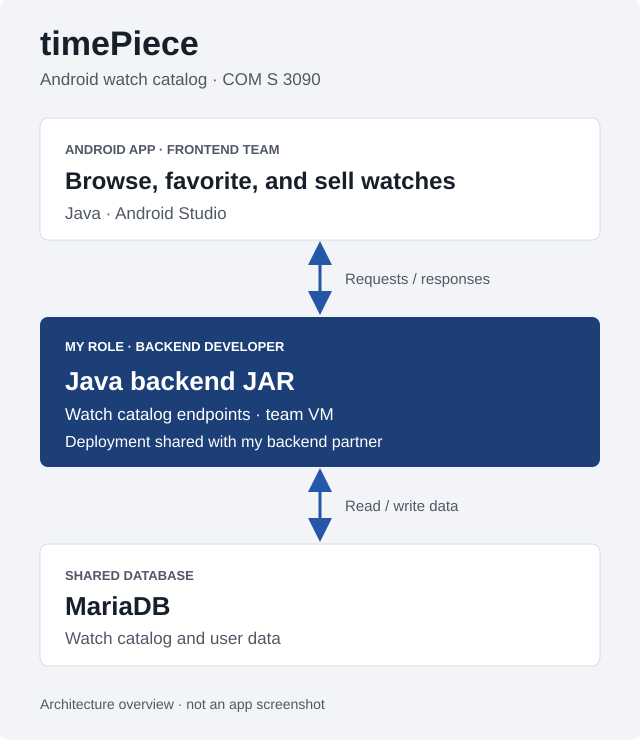
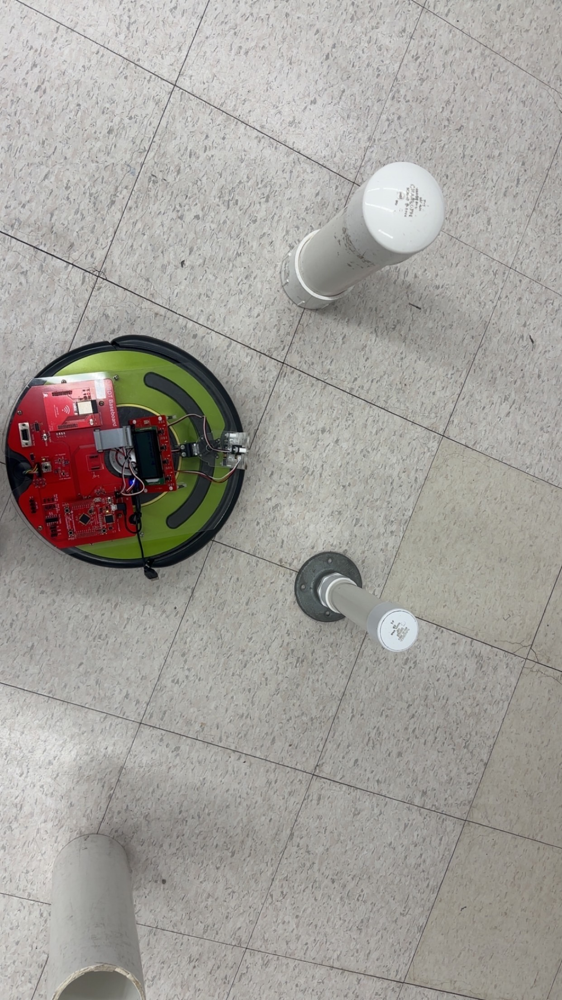

Projects
Projects
A few things I have built or worked on in class and on my own.
Personal project · Co-developed · iPhone app
FocusUp
I co-built FocusUp with my roommate to help students stay on top of their work and spend less time on distracting apps. It turns tasks into quests, connects progress to a player profile, and uses app groups to block or limit distractions.
This is my first app taken from my own idea to testers. We used SwiftUI for the iPhone interface, Apple’s Screen Time frameworks for app restrictions, and Supabase with PostgreSQL for accounts and shared features. We both receive credit for the project.
What I worked on with my teammate
- Built the iPhone interface and used AI development tools while learning Apple’s Screen Time frameworks.
- Designed and hosted the database on Supabase with PostgreSQL.
- Added Sign in with Apple and email sign-up, including confirmation links that return to the app.
- Built Canvas-connected browser extensions for Chrome, Edge, and Firefox with Apple sign-in; submitted the Edge extension to Edge Add-ons.
- Distributed builds to testers through TestFlight.
How the current app fits together
Home manages app groups and their Block or Limit rules. Quests holds tasks and Canvas assignments. Player shows the avatar, level, EXP, coins, and customization. Friends contains requests, cheers, and a leaderboard.
Quests and app blocking work locally. Supabase supports accounts, player profiles, friends, and assignments imported through the desktop browser extension. An earlier Node backend remains in the repo, but the current backend notes identify Supabase as its replacement.

Early visual concepts
FocusUp concept screens
These timer, planner, and stats mockups came from my original project brief. They are concept images, rather than screenshots of the current quest-based app. All displayed tasks and numbers are illustrative.



COM S 3090 · Backend developer
timePiece
timePiece is a team Android app for browsing, favoriting, and selling watches. Our team had four people: two frontend developers and two backend developers. I worked on the backend.
I built the watch catalog backend that supplies data to the Android catalog screen, worked with MariaDB to store catalog and user data, and helped my backend partner deploy the backend JAR to our team VM.
My backend contributions
- Owned the watch catalog endpoints for Round Trip 2.
- Worked with a shared MariaDB schema for watch and user data.
- Deployed the backend JAR to the team VM with my backend partner.
- Designed the selling model to separate a catalog watch from individual listings, allowing multiple listings for the same watch.
How the team worked
We worked in SCRUM sprints, tracked tasks on a GitLab issue board, and reviewed code through merge requests. I coordinated the catalog backend with the frontend developer working on the catalog screen.
App features and demo scope
The catalog was designed around a two-column watch grid with search. The app uses USER, MODERATOR, and ADMIN roles. Users have profile, favorites, sell, and report features; admins manage catalog watches, and moderators manage account deletion.
AR try-on and wrist calibration were outside the demo scope. These are app-level features and plans; my contribution was backend development.

Tap a box to explore
The Java backend receives requests from the app. I built the watch catalog endpoints and helped deploy the backend JAR to our team VM.
3190 · HTML, CSS, JavaScript, JSON
ISU Jeopardy
I built an Iowa State-themed Jeopardy game with four categories, 16 questions, and score tracking for two teams. As the project grew, I used JSON to supply questions and other page content.
How the game hub works
The hub reads query parameters to choose a game. JSON configuration supplies the available game and board-style choices, and JavaScript renders those choices on the page.
What I built around it
The larger midterm site included content pages, authors and FAQ pages, images and content rendered from JSON, and a Bootstrap accordion FAQ.
HTML, CSS, JavaScript
Maze Solver Visualizer
I built this to practice JavaScript and algorithms in a more visual way. You can edit the grid, place walls, move the start and end points, and watch the search run.
- Made a 16x24 grid that can be edited in the browser.
- Used click events to place walls and move the start and end cells.
- Used Breadth-First Search to find the shortest path.
- Showed basic stats like visited cells and path length.
C, robotics, team project
Autonomous Tree Cutter
This was a team robotics project for CPRE 288. The main challenge was writing and testing C control logic, then seeing whether the robot actually behaved the way we expected.
- Worked on control logic in C.
- Tested the robot with teammates and adjusted behavior based on results.
- Debugged movement issues when the robot did not respond as planned.
- Learned how different hardware debugging feels compared with normal code debugging.

3190 · Activity 09 · Currently learning
Reusable cards with React
I am using React with Vite to learn how a page can be built from reusable components. In Activity 09, App.jsx passes values into UserCard components through props.
Each card displays a picture, name, salary, marital status, and address using React-Bootstrap Container and Card components.
How the files fit together
src/main.jsxmounts the app.App.jsxrenders cards and passes in props.src/UserCards.jsxdefines the reusable card component.src/index.csscontrols the styles.